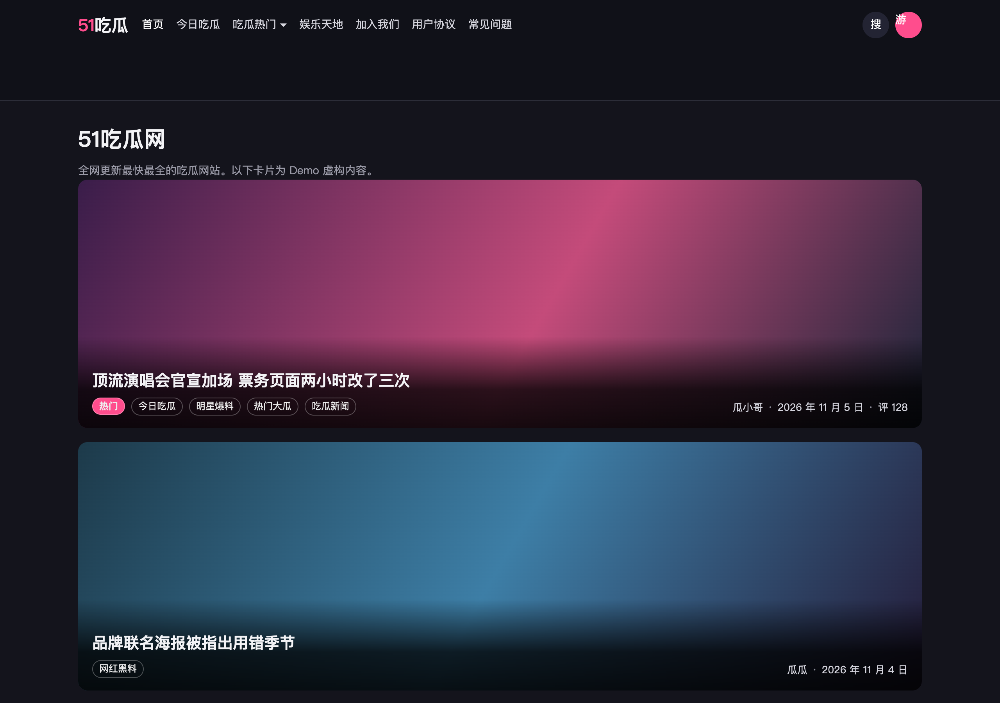
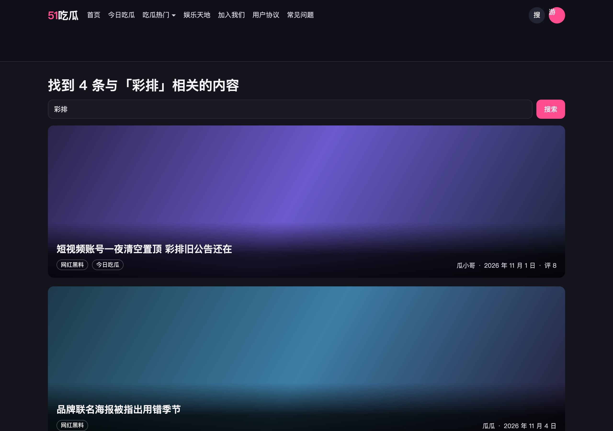
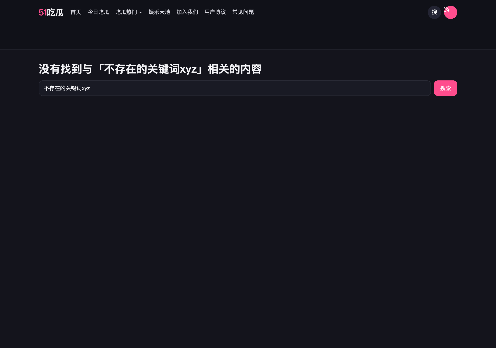
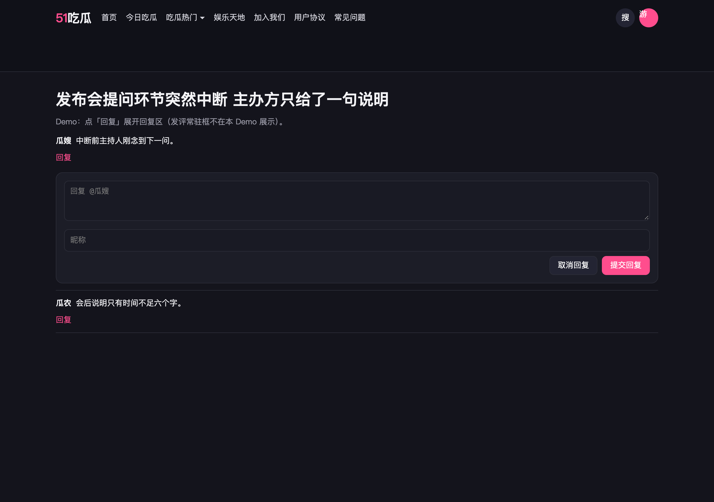
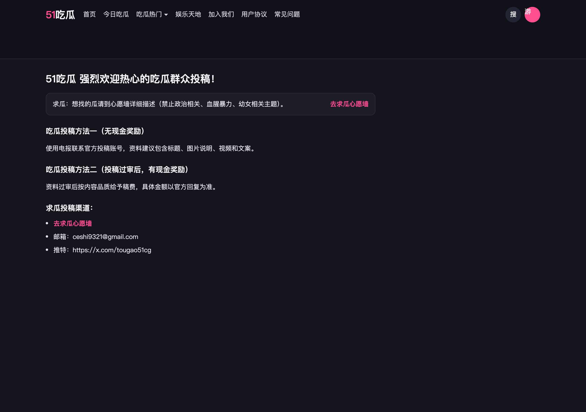
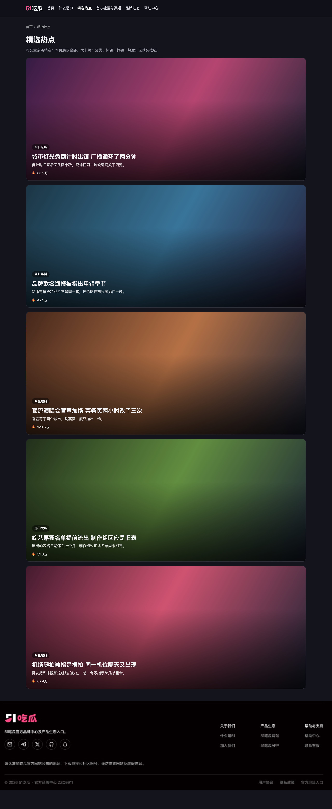
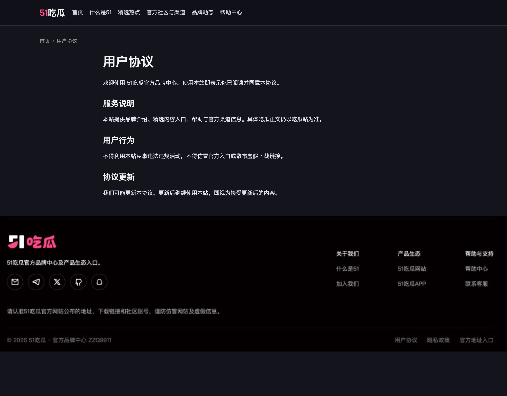
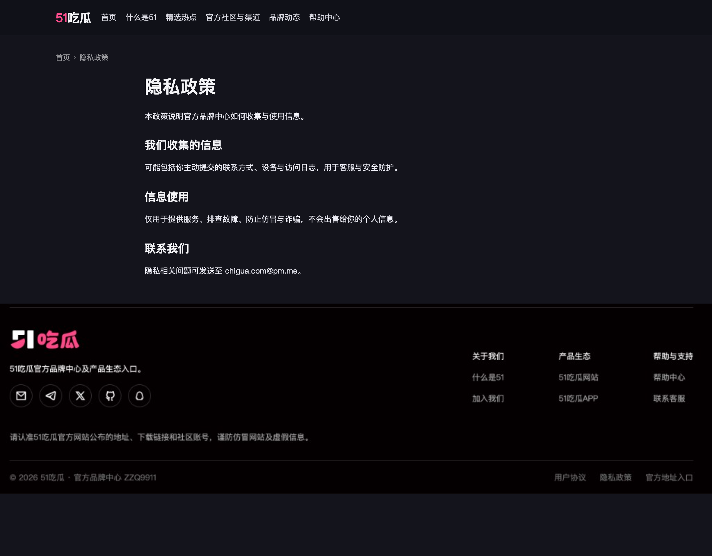

51吃瓜 · 首页卡片、搜索、说明页与品牌中心入口
版本 1.2 · 2026-11-13 · 适用端：51吃瓜 Web、官方品牌中心（guanfang51.com）。截图可点击放大。顶栏「Demo」打开可点原型。
版本目的 / 需求背景
首页卡片把作者、长日期、多个分类和「热门」挤在一行，热门只是红字，评论数看不到。搜索页只有「包含关键字 xxx 的文章」，没有总条数；读者改词续搜也不方便。
「加入我们」「用户协议」「隐私政策」现网走了内容页模板，顶部会出广告、页底还有评论。这三页应改成独立页（与常见问题、回家的路同类）：顶部无广告，底部统一「最新地址」，不接评论。
官方品牌中心顶栏「精选热点」现在指向首页锚点 /#featured，只在首页滚动定位，和「品牌动态」「帮助中心」等主菜单独立页不一致。页脚「用户协议」「隐私政策」跳到吃瓜站外链，品牌中心没有自己的协议页。
桌面走查又收出一批路径问题：搜完不能在结果页改词续搜；短剧回复框和发评框标题撞车；求瓜投稿页仍按旧口径把人往评论区赶，和已上线的「求瓜心愿墙」脱节。
本期做：重排首页与搜索结果卡片；搜索展示总条数与结果页续搜（含无结果），结果按相关度排序；吃瓜站「加入我们」「用户协议」「隐私政策」改为独立页（正文在前、底部最新地址；移除内容页模板带来的正文前广告与评论区）；品牌中心「精选热点」改为独立二级页；品牌中心用户协议与隐私政策做成独立页；短剧回复框与发评框文案区分；求瓜投稿页引导改为进入「求瓜心愿墙」。首页分页、分类频道沿用现网，卡片改信息结构。
业务对象：来吃瓜的读者，浏览品牌中心的用户，以及维护说明页、精选内容和协议文案的运营。预期：扫卡片能分清热门、时间和讨论热度；搜索能知道有多少条，并能在结果页继续改词；打开说明页先看到正文；从主菜单进精选和协议时落到独立页；求瓜、回复路径不易走错。
需求功能矩阵
| 功能ID | 模块 | 名称 | 描述 |
|---|
| FC-01 | 列表 | 首页与搜索卡片 | 底部两行：标题；第二行左侧先「热门」胶囊（若有）再分类标签，右侧作者、完整日期、评 N。 |
| FC-02 | 搜索 | 搜索条数与续搜 | 页头展示找到 N 条或无结果文案；有/无结果页均保留搜索框并回填关键词可续搜；结果按相关度排序。 |
| FC-03 | 说明页 | 加入我们与协议页 | 吃瓜站「加入我们」「用户协议」「隐私政策」改走独立页模板；移除正文前广告与评论区；底部与「回家的路」「常见问题」一致。 |
| FC-04 | 互动 | 回复框文案 | 回复区无独立标题；正文框默认「回复 @昵称」（输入即清空）；昵称必填、在正文下；操作「取消回复」「提交回复」。 |
| FC-05 | 投稿 | 求瓜引导心愿墙 | 求瓜投稿页两处提供「去求瓜心愿墙」（求瓜提示旁；求瓜投稿渠道列表内，与邮箱、推特同级），点击进入心愿墙主列表。 |
| FC-06 | 品宣官网 | 精选热点独立页 - 品宣官网 | 顶栏进独立页；列表用大卡片（无箭头）；可配多条，首页区块只展示前 3 条。 |
| FC-07 | 品宣官网 | 协议独立页 - 品宣官网 | 品宣独立页；正文与主站用户协议 / 隐私政策相同；页脚入口链到品宣本站协议页。 |

首页：底部两行。标题一行；第二行左侧「热门」（若有）在分类标签前，右侧作者与完整日期。
FC-01
首页与搜索卡片
功能逻辑
首页信息流和搜索结果使用同一张卡片。封面区铺图；封面底部两行：第一行标题；第二行左侧先「热门」胶囊（运营标记时）、再分类标签，右侧作者和时间。搜索结果列表与首页共用该卡片结构。
业务规则
- 封面比例沿用现网 1920×565，宽扁横幅。标题、元信息、分类叠在封面底部。
- 热门：运营标记为热门时，在第二行左侧、分类标签之前显示红底白字胶囊「热门」。未标记时不占位。
- 热门标记不跟评论数挂钩，也不参与搜索相关度计算。
- 封面底部固定两行。第一行是标题，最多两行，超出省略。
- 第二行左侧：有热门时先出「热门」，再按文章已挂分类的配置顺序展示描边胶囊标签。现网一篇可以挂到 4 个，也可以更多。这一侧排满后标签换行。
- 第二行右侧是作者、完整日期、评 N，顺序固定；日期格式为「YYYY 年 M 月 D 日」，例如「2026 年 11 月 5 日」。评论数为 0 时不显示「评 0」。
页面交互
- 首页列表顺序沿用现网，按发布时间倒序。
- 卡片点击进入该文现网文章详情。详情页沿用现网。
异常
- 封面图加载失败：保留底部信息区与热门/分类标签，封面区用深色底，标题仍完整按两行规则展示。
- 无作者：元信息作者位显示「匿名」。
- 无分类：第二行左侧仅保留「热门」（若有）；右侧仍为作者、完整日期、评 N。
数据流转
卡片读标题、作者、发布时间、评论数、分类列表、热门标记。评论数用已对读者可见的评论条数。热门标记由运营字段单独下发。

有结果：页头「找到 N 条」；页内搜索框回填关键词，可改词再搜；结果按相关度排列。

无结果：页头「没有找到与「关键词」相关的内容」；页内仍保留已填关键词的搜索框，可改词续搜。
FC-02
搜索条数与续搜
功能逻辑
提交关键词后进入搜索结果。页头写清总条数（或无结果文案），结果用 FC-01 卡片。列表按相关度从高到低；相关度相同按发布时间从新到旧。
有结果页与无结果页均在页头区域保留搜索框并回填本次关键词，读者可直接改词再搜，不必回顶栏重开搜索。
业务规则
- 有结果页头文案：「找到 N 条与「关键词」相关的内容」。N 为全部命中条数，不是当前页条数。
- 无结果页头文案：「没有找到与「关键词」相关的内容」。
- 有分页时，页码条另写「第 A–B 条，共 N 条」。
- 命中范围：标题、正文、标签、已对读者可见的评论。关键词要在该字段里连续出现，不区分大小写。标题、正文、标签、评论任一处命中，文章就进入结果。
- 相关度按位置加分，同一位置无论出现几次只加一次。多个位置同时命中，分值相加。
- 标题命中加 100。正文命中加 50。已可见评论命中加 20。标签命中加 10。标签就是卡片上的分类。
- 待审核、已下架的评论不参与命中，也不加相关度。
- 排序：按相关度从高到低；相关度相同，按发布时间从新到旧。
- 卡片上的「评 N」是读者能看到的评论条数，只负责展示，不参与相关度。
- 有结果页与无结果页均展示搜索框；搜索框默认填入本次成功提交的关键词。
- 点「搜索」或回车：用框内当前文案发起新搜索；成功后按相关度重排并更新页头 N / 无结果文案。
- 从结果页点顶栏放大镜回到搜索入口时，输入框同样回填最近一次关键词。
- 空关键词点搜索：不进入结果页。
页面交互
- 顶栏搜索图标展开输入框。输入后点「搜索」或回车，打开结果页。
- 进入有结果或无结果页，即可看见已填关键词的搜索框，可编辑。
- 改词后搜索：整页刷新为新结果，页头文案与关键词同步更新。
异常
- 未输入关键词就搜索：Toast「先输入关键词」，停留在当前页，不发请求。
- 结果页框内清空后点搜索：Toast「先输入关键词」，停留在当前结果页，不发请求。
- 搜索接口失败：结果区改为「搜索失败，请再试一次」，保留关键词和输入框。
- 请求返回后关键词已被用户改掉：丢弃这次结果，不覆盖当前输入。
数据流转
请求带关键词和页码。响应给总条数、相关度与卡片字段。总条数以本次过滤后的全集为准，翻页不重新计数。续搜与首次搜索同一套接口。
FC-03
加入我们与协议页
功能逻辑
站内页面分两套模板：内容页与独立页。内容页（吃瓜正文等）顶部会出广告区；独立页不走内容页壳，顶部没有那块广告。底部区域可统一挂「最新地址」等公共块。
「加入我们」「用户协议」「隐私政策」现网误走了内容页，所以会出现正文前广告和页底评论。本期改为独立页：顶部无广告，无评论；底部与现网「回家的路」「常见问题」一致。研发按改模板即可，本条不另做 Demo。
业务规则
- 适用页面（仅此三页）：加入我们、用户协议、隐私政策。
- 三页必须配置为独立页模板，不得再绑内容页模板。
- 独立页：正文前不渲染应用广告墙、导航外链墙或其它导流图。
- 独立页：不提供评论列表，也不提供发表框。
- 底部与现网「回家的路」「常见问题」一致（含「最新地址」等公共块的字段、文案与打开方式），不另起一套。
页面交互
- 从站内入口进入上述三页，整页为独立页，落点在正文标题。
- 底部链接打开方式与「回家的路」「常见问题」现网一致。
异常
- 底部某一地址配置为空：按「回家的路」「常见问题」现网同一套显隐处理。
- 三页仍被配成内容页：视为未达标；上线前改回独立页。不得靠前台「藏广告」糊弄。
数据流转
三页读各自正文。页面类型走独立页。底部公共块与「回家的路」「常见问题」读同一套全站配置。评论与内容页广告位对这三页不请求、不渲染。

Demo：点「回复」后该条下方展开回复区（不展示常驻「添加新评论」）；正文框默认「回复 @昵称」，下为昵称与「取消回复」「提交回复」。
FC-04
回复框文案
功能逻辑
短剧或文章详情里，页面上方「添加新评论」为常驻发评区，本条不改其位置与结构。点某条「回复」后在该条下方展开回复区；回复区须与发评区文案区分，并可主动收起。
业务规则
- 常驻发评区：标题「添加新评论」（或现网等价），含「昵称」与正文，主按钮「提交评论」。昵称必填，占位文案为「昵称」。本条 Demo 截图只展示回复展开态。
- 点某条评论的「回复」后，在该条下方展开回复区：不展示区标题（不要「回复 @昵称」标题行）。
- 回复正文输入框默认展示「回复 @昵称」（此处为被回复评论的作者展示名）。此为占位默认文案，用户开始输入后自动清空，不作为提交正文，也不写入回复内容。
- 字段顺序：先回复正文，再「昵称」。
- 操作按钮：次要「取消回复」+ 主按钮「提交回复」，整组右对齐（取消在左、提交在右）。
- 回复区「昵称」与发评区同规则：必填；填写后作为本条回复的展示称呼；占位文案为「昵称」。
- 同一时刻只展开一个回复区；点另一条「回复」时，关掉上一个回复区并打开新的（草稿是否保留不在本期）。
页面交互
- 点「回复」：展开对应回复区，焦点落在回复正文输入框。
- 点「取消回复」：收起该回复区，不提交；已填内容清空（本期不保留草稿）。
- 点「提交回复」：昵称与正文均通过校验后，按现网回复提交规则提交；成功后收起该回复区。
异常
- 昵称为空（含仅空格）：Toast「请填写昵称」，不提交，回复区不关。
- 回复正文为空（含仅空格）：Toast「先写点评论内容」或不提交，文案与现网评论校验对齐；回复区不关。
- 被回复评论已删除：Toast 说明不可回复，关闭该回复区。
数据流转
提交仍走现网回复接口，带父评论 ID。本条只改展示文案与展开位置，不改审核与计数规则。

Demo：求瓜投稿页两处「去求瓜心愿墙」——① 顶部求瓜提示旁；②「求瓜投稿渠道」列表内，与邮箱、推特同级。
FC-05
求瓜引导心愿墙
功能逻辑
求瓜需求应落在「求瓜心愿墙」，不再引导读者去投稿页评论区留言。求瓜投稿页上原先「请在评论区详细描述你要找的瓜」类提示，改为可点入口，一点进入心愿墙。
业务规则
- 求瓜投稿页固定两处增加可点文案「去求瓜心愿墙」（不得再写「去评论区」）：
- 顶部求瓜说明句旁（现网「求瓜：请在评论区…」那一行右侧或句末）。
- 「求瓜投稿渠道：」列表内，与邮箱、推特同级（单独一项渠道，不挂在标题行旁）。
- 两处入口文案、跳转目标相同，均进入心愿墙主列表；路径与 WW-01 一致（顶栏「官方信息」→「求瓜心愿墙」同一落地页）。
- 不在本页滚动到评论表单；投稿方法一 / 方法二及其它说明段落结构可保留，只改求瓜引导。
- 心愿墙内发帖、筛选、搜索规则见心愿墙 PRD（WW-01～WW-03），本条只负责从投稿页导过去。
页面交互
- 点任一处「去求瓜心愿墙」：当前页跳转到心愿墙主列表（同标签页）。
异常
- 心愿墙不可用或路由失败：Toast「求瓜心愿墙暂时不可用」，停留在投稿页。
数据流转
纯前台跳转，不新增接口。落地页与 WW-01 共用。

品宣官网：页头面包屑「首页 › 精选热点」；下列大卡片无箭头。独立页展示全部配置项。
FC-06
精选热点独立页 - 品宣官网
功能逻辑
官方品牌中心顶栏「精选热点」与「品牌动态」「帮助中心」一样，进入本站独立二级页。运营可配置多条精选；独立页按配置顺序展示全部。首页若保留「精选内容」区块，只展示前 3 条，并从顶栏或「查看更多」进入独立页看全部，不再用首页锚点滚动。
业务规则
- 适用范围：官方品牌中心（guanfang51.com）。
- 顶栏文案仍为「精选热点」，属于主菜单一级入口，落地页是独立二级页。
- 落地地址使用独立路径，例如 /featured。不再使用 /#featured 或其它仅在首页滚动的锚点。
- 页头面包屑与品宣其它二级页一致：首页 › 精选热点。「首页」链到品宣官网首页；当前页「精选热点」不可点或点了无跳转。
- 列表用大卡片：通栏封面（可多图拼底），底部叠分类标签、标题、摘要、热度（火焰 + 数值）。卡片上不放箭头或跳转圆钮；整卡可点。
- 支持配置多条精选（大于 3 条亦可）。独立页展示全部；首页「精选内容」区块只取配置顺序的前 3 条。
- 首页区块内「查看更多」或等价入口，与顶栏一样进入该独立页。
- 点击某一条，进入该条现有详情或外链规则，本期不改单条详情形态。
页面交互
- 在任意品牌中心页面点顶栏「精选热点」，整页进入独立页，顶栏该项高亮。
- 打开带旧锚点 /#featured 的链接时，直接跳到独立页 /featured，不再停在首页锚点。
- 浏览器后退从独立页回到进入前的页面。
异常
- 精选列表为空：独立页仍可进入，正文区显示「暂时没有精选内容」；首页区块按空态隐藏或显示同文案（与现网空态策略一致，全站统一一种）。
- 配置不足 3 条：首页区块有几条展示几条；独立页展示全部。
- 单条内容下线或删除：列表不展示该条；已打开的详情按现网不可见处理。
数据流转
独立页与首页区块读取同一份运营精选配置（有序列表）。首页截取前 3 条；独立页取全量。不各维护一份。

品宣官网用户协议：顶栏同品宣二级页，面包屑「首页 › 用户协议」，底部用品宣统一页脚。

隐私政策同结构：面包屑「首页 › 隐私政策」，页脚同套。
FC-07
用户协议与隐私政策独立页 - 品宣官网
功能逻辑
品牌中心页脚的「用户协议」「隐私政策」各自打开品宣官网本站独立页，不再跳转到主站（吃瓜站）协议地址。版式与品宣其它二级页一致：同一套顶栏、面包屑、统一页脚。
具体内容使用与主站「用户协议」「隐私政策」相同的正文；只是独立做成品宣侧页面承载，读者留在品宣官网内阅读。
业务规则
- 适用范围：官方品牌中心页脚及站内其它指向协议的入口。
- 用户协议、隐私政策各有独立路径，例如 /user-agreement、/privacy。
- 页脚「用户协议」链到品宣本站用户协议页，「隐私政策」链到品宣本站隐私政策页。不再链到 51cg1.com 或其它主站域名。
- 具体内容：与主站用户协议、主站隐私政策正文一致（同一套文案口径）。品宣侧只负责独立成页展示，不另写一套协议条款。
- 顶栏与品宣官网其它二级页同一套；页头面包屑为「首页 › 用户协议」或「首页 › 隐私政策」。「首页」回品宣首页。
- 页面底部使用品宣官网统一页脚（含关于我们 / 产品生态 / 帮助与支持、版权与协议入口），与精选热点等二级页同一套，不另做简化页脚。
- 正文区：先正文，无评论，正文前无广告墙。不强制挂主站「最新地址」块。
页面交互
- 点页脚「用户协议」或「隐私政策」，整页进入品宣本站对应独立页。
- 页内可用顶栏、面包屑或页脚再切到另一份协议 / 回首页，不跳主站。
异常
- 主站协议正文尚未就绪或品宣侧未同步成功：页面可进，正文区显示「内容准备中，请稍后再看」。
- 旧外链书签仍指向主站协议地址：主站协议页可继续保留；品宣新入口只走品宣独立页。
数据流转
品宣两页展示的正文与主站用户协议 / 隐私政策同源（同步或引用同一套配置）。页脚链接写死为品宣本站路径，不读主站外链 URL。
验收
| 功能ID | 验收标准 |
|---|
| FC-01 | □ 封面比例 1920×565 □ 热门时第二行左侧「热门」红底白字在分类标签前；非热门不占位 □ 底部两行：标题，以及同一行的热门/分类与作者、完整日期、评 N □ 日期为「YYYY 年 M 月 D 日」□ 0 条评论不显示 □ 分类按已挂数量全部展示，排满换行 |
| FC-02 | □ 有结果页头为找到 N 条 □ 无结果页头为「没有找到与「关键词」相关的内容」□ 有/无结果页均有搜索框并回填关键词 □ 改词再搜更新结果 □ 按相关度排序（标题 100、正文 50、可见评论 20、标签 10），同分按时间 □ 空关键词 Toast「先输入关键词」 |
| FC-03 | □ 「加入我们」「用户协议」「隐私政策」为独立页模板 □ 移除正文前广告 □ 移除评论区 □ 底部与现网「回家的路」「常见问题」一致 |
| FC-04 | □ 回复区展开后正文框默认「回复 @昵称」，输入即清空且不提交该默认文案 □ 昵称必填、占位为「昵称」□ 有「取消回复」可收起 □ 主按钮「提交回复」 |
| FC-05 | □ 顶部求瓜提示旁有「去求瓜心愿墙」□「求瓜投稿渠道」列表内有「去求瓜心愿墙」，与邮箱、推特同级 □ 两处均进心愿墙主列表 |
| FC-06 | □ 顶栏进独立路径 □ 旧锚点转到独立页 □ 面包屑为「首页 › 精选热点」□ 大卡片含分类/标题/摘要/热度 □ 可配多条 □ 首页区块只展示前 3 条 □ 空列表有空态文案 |
| FC-07 | □ 品宣各有独立协议页 □ 页脚链本品宣协议页 □ 正文与主站用户协议 / 隐私政策一致 □ 顶栏/面包屑/统一页脚与品宣二级页一致 |